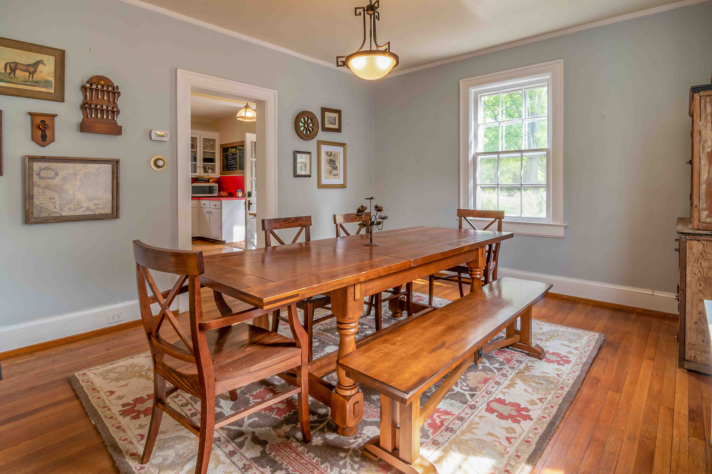
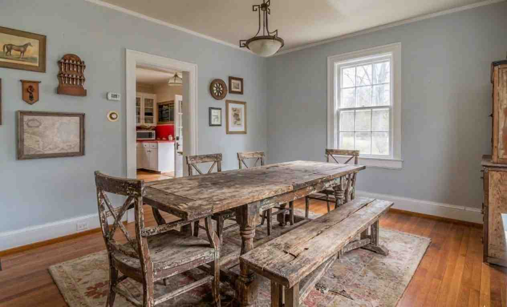

Dining Tables / PROJECT STUDY
Dining table surface
- Condition before
- Worn finish and uneven sheen
- Proposed work
- Assess the finish and propose suitable tabletop refinishing
- Finish
- Finish selected after assessment
- Intended result
- An even surface with grain and character considered